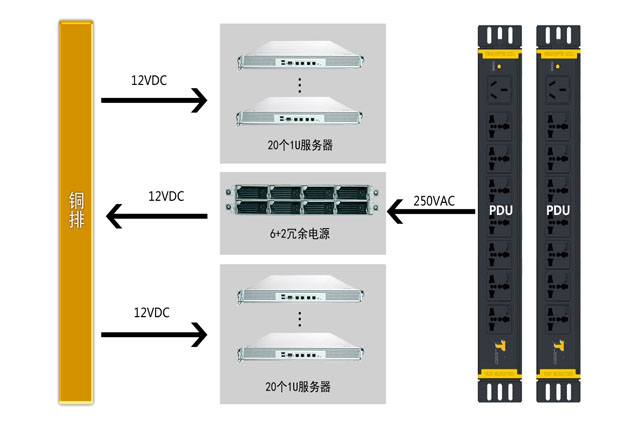
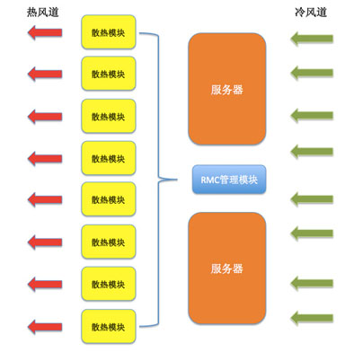
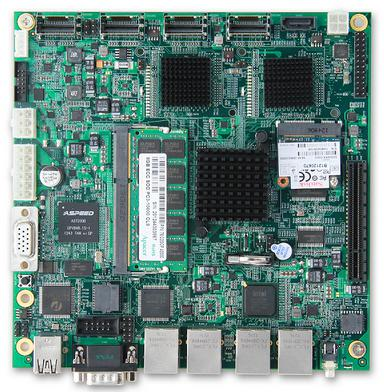
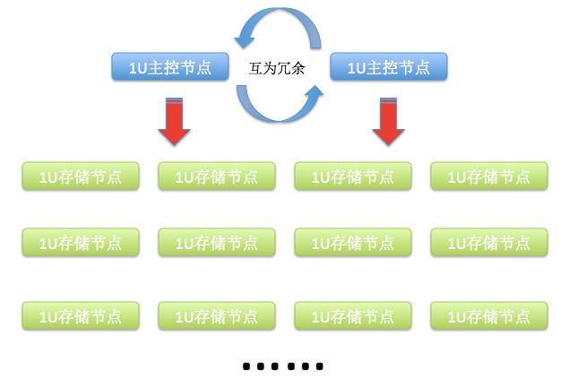
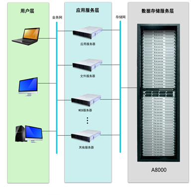

{kind=link}
{kind=link}
- 低功耗云存储解决方案
润泽打造了一个强大的云存储平台，利用润泽配套设施优势及云创独特的存储解决方案，将云存储规模、容量、安全性以及能耗都做到了极致，给拥有超大存储需求的用户提供了更经济实用的解决途径，帮助诸如视频存储、大数据备份、云计算等庞大数据量的应用提供了坚固的基础保障。润泽云存储平台利用超低功耗、高密度云存储产品，基于Intel Avoton存储专用处理器开发的64位低功耗硬件平台，全面展现了新一代高密度云存储产品超高容量、超高性能、节能环保的绿色魅力，与传统云存储产品相比，该产品最大可搭载总存储容量为2.3PB，比传统云存储产品节能多达10倍，诸多优势完胜传统存储产品，可提供灾备云以及企业安全办公私有云等解决方案。
采用集中式供电系统，通过8个2000W的电源模块，构成6+2的冗余系统，任意一个电源模块出现故障，不影响整个系统的供电。采用目前最先进的直流式供电（12V）,电压从250VAC直接逆变到12VDC，通过铜排电缆送到每个节点，减少电压逆变次数，提高电源效率。
供电系统逻辑视图
整套系统通过管理模块，对整个机架10个散热模块进行实时控制，每个散热模块由3个独立的风扇组成，通过集中管理模块，根据每个区域的温度，自动调节风扇转速，针对整个系统的问题进行有效散热，从而达到节电效果。
散热系统逻辑视图
采用Intel64位低功耗处理器，支持DDR3内存，单机架峰值功耗8000W,与传统云存储系统相比，峰值节能3倍。系统采用按需运转技术，平均能耗可比传统存储系统降低10倍。单个主板可接12个SATA3.0硬盘，对外网络提供2-4个千兆以太网，支持网口绑定，网络带宽速率最高可达4Gb。系统采用高可靠配置，当出现磁盘或者节点损坏时，可以通过管理监控界面定位到故障节点甚至是磁盘，通过管理节点关闭故障节点，拔出节点进行在线修复，不影响系统的正常使用。
低功耗主板图
超低功耗云存储系统内部使用cStor云存储系统软件进行管理。从服务器配置上包括2个元数据管理节点和32个存储节点。管理节点采用双机热备进行容错，存储系统采用副本方式方式容错。
云存储系统采用了分布式的存储架构，元数据服务器采用主备双机容错的方式管理各个存储节点，文件分散存储在各存储节点上
系统的整体吞吐率随着存储的规模的增大是线性增加，直到达到带宽的饱和利用,系统部署示意图
- 关键技术
-
负载自动均衡技术
采用中心服务器模式来管理整个云存储文件系统，所有元数据均保存在主管理服务器上，文件则划分为多个节点存储在不同的节点服务器上。 主卷管理服务器维护了一个统一的命名空间，同时掌握整个系统内节点服务器的使用情况，当客户端向元数据服务器发送数据读写的请求时，元数据服务器根据节点服务器的磁盘使用情况、网络负担等情况，选择负担最轻的节点服务器对外提供服务，自动均衡负载负担。 另外，当某有一个节点服务器因为机器故障或者其他原因造成离线时，主卷管理服务器会将此机器自动屏蔽掉，不再将此节点服务器提供给客户端使用，同时存储在此节点服务器上的数据也会自动的编码冗余到其他可用的节点服务器上，自动屏蔽节点服务器故障对系统的影响。
-
高速并发访问技术
客户端在访问云存储时，首先访问主卷管理服务器节点，获取将要与之进行交互的节点服务器信息，然后直接访问这些节点服务器完成数据存取。 客户端与主卷管理服务器之间只有控制流，而无数据流，这样就极大地降低了主卷管理服务器的负载，使之不成为系统性能的一个瓶颈。客户端与节点服务器之间直接传输数据流，同时由于文件被分成多个节点进行分布式存储，客户端可以同时访问多个节点服务器，从而使得整个系统的I/O高度并行，系统整体性能得到提高。通常情况下，系统的整体吞吐率与节点服务器的数量呈正比。
-
高可靠性保证技术
对于元数据，通过操作日志来提供容错功能，当主管理服务器发生故障时，在磁盘数据保存完好的情况下，可以迅速恢复以上元数据。为了防止主管理服务器彻底死机的情况，还提供了主管理服务器远程的实时备份，这样在当前的主管理服务器出现故障无法工作的时候，另外一台备管理服务器可以迅速接替其工作。 对于节点服务器，采用编解码的方式实现容错，分布存储在不同的节点服务器上。数据块的分布策略考虑了多种因素，如网络的拓扑、机架的分布、磁盘的利用率等。在其后的过程中，如果相关的数据块出现丢失或不可恢复等状况，主管理服务器会自动将该数据块编解码冗余到其他节点服务器，从而确保数据块的一定的冗余容错，进行自动冗余容错重建。在有多个节点服务器的情况下，任意损失一个节点，数据都不会丢失，而且随着节点服务器数目的增多，整个系统的可靠性越大。
-
分布式分级动态存储技术
云存储系统，就是将数据分散存储在多台独立的设备上。传统的网络存储系统采用集中的存储服务器存放所有数据，存储服务器成为系统性能的瓶颈，也是可靠性和安全性的焦点，不能满足大规模存储应用的需要。分布式网络存储系统采用可扩展的系统结构，利用多台存储服务器分担存储负荷，利用位置服务器定位存储信息，它不但提高了系统的可靠性、可用性和存取效率，还易于扩展。云存储系统将普通商用的 PC机或工作站通过高速网络互联在一起组成机群，能够根据系统的需要随时增加新的硬件，提高系统的可伸缩性和可用性，从而能够在价格低廉的中低端平台上获取高端或者超级计算机系统才具备的高可伸缩性、高可用性和高性能。
分级存储是根据数据的重要性、访问频率、保留时间、容量、性能等指标，将数据采取不同的存储方式分别存储在不同性能的存储设备上，通过分级存储管理实现数据客体在存储设备之间的自动迁移。数据分级存储的工作原理是基于数据访问的局部性。通过将不经常访问的数据自动移到存储层次中较低的层次，释放出较高成本的存储空间给更频繁访问的数据，可以获得更好的性价比。这样，一方面可大大减少非重要性数据在一级本地磁盘所占用的空间，还可加快整个系统的存储性能。
传统的数据存储一般分为在线(On-line)存储和离线(Off-line)存储两级存储方式。而在分级存储系统中，一般分为在线(On-line)存储、近线（Near-line）存储和离线(Off-line)存储三级存储方式。
1.在线存储是指将数据存放在高速的高性能的云存储系统存储设备上，适合存储那些需要经常和快速访问的程序和文件，其存取速度快，性能好，存储价格相对昂贵。在线存储，是工作级的存储，其最大特征是存储设备和所存储的数据时刻保持“在线”状态，可以随时读取和修改，以满足前端应用服务器或数据库对数据访问的速度要求。
2.近线存储是指将数据存放在低速的磁盘系统上，一般是一些存取速度和价格介于高速磁盘与磁带之间的低端磁盘设备。近线存储外延相对比较广泛，主要定位于客户在线存储和离线存储之间的应用。就是指将那些并不是经常用到（例如一些长期保存的不常用的文件归档），或者说访问量并不大的数据存放在性能较低的存储设备上。但对这些设备的要求是寻址迅速、传输率高。因此，近线存储对性能要求相对来说并不高，但又要求相对较好的访问性能。同时多数情况下由于不常用的数据要占总数据量的较大比重，这也就要求近线存储设备在需要容量上相对较大。近线存储设备主要有采用低功耗架构的云存储系统。
3.离线存储，指将数据备份到磁带或磁带库上。大多数情况下主要用于对在线存储或近线存储的数据进行备份，以防范可能发生的数据灾难，因此又称备份级存储。离线存储通常采用磁带作为存储介质，其访问速度低，但价格低廉的海量存储。
本方案云存储系统就采用了分级技术，把存储信息根据信息的重要性、访问频率等对信息进行了分级存储，将文件的元数据等访问频繁的重要信息时刻保持在线存储，开机后保存在内存中，可以随时读取和修改，以满足前端应用服务器或数据库对数据访问的速度要求。 将其它备份数据、冗余容错的数据等访问量小的数据等采用廉价的SATA硬盘存储。对于访问量小的数据采用离线存储，一旦需要访问这些数据可以使用相应的唤醒策略来实现将离线转为在线，如通过网络唤醒机制等。对于与时间紧密相关的数据（如新闻、电视等内容信息）的存储，这些数据随着时间的推移，它们的使用频率越来越少，我们可以根据时间来对这些信息进行分级动态存储，如将前几个月的历史数据存放到离线存储设备上，它们的元数据信息也不需要存储在元数据服务器的内存中，直接存放在元数据服务器的硬盘中，如果需要访问时可以将其调入内存中。对于这些存储这些过时信息的存储节点可以让其一直处于待机状态，一旦要使用可以通过网络唤醒让其工作起来。
-
高可用技术
系统中的所有服务节点均是通过网络连接在一起，由于采用了高可靠的容错机制，系统增减节点不必停止服务，可在线增减存储节点，存储节点和元数据节点间通过注册管理机制自适应管理，实现自动伸缩。 元数据服务器采用主备双机热备技术，主机故障，备机自动接替其工作，对外服务不停止；存储节点采用编解码冗余备份机制，如采用4:2编码容错，任意损失两个节点，数据不丢失，服务不停止。
-
超低功耗存储技术
服务器的功耗取决于各个配件的总体功耗，而主要耗电大户则是处理器、芯片组和存储介质了。低功耗存储技术主要是改进这些配件，进而实现节能，这样服务器乃至数据中心整体功耗则会得到更好的控制。 随着嵌入式技术的飞速发展，嵌入式架构设备的性能有了很大的提高。由于嵌入式系统是应用在特定的环境下，针对特殊的用途来设计的系统，所以不同于通用的计算机系统，嵌入式系统是针对具体应用设计的“专用系统”。它的硬件和软件都必须高效地设计。“量体裁衣”，去除冗余，力争在较少的资源上实现更高的性能。与通用的计算机系统相比，它具有功耗低，体积小、集成度高、成本低等优点。可以被应用在近线存储、离线存储的存储节点的设计上，有效的减少成本和使用的功耗，同时相应的散热系统也可以简化。